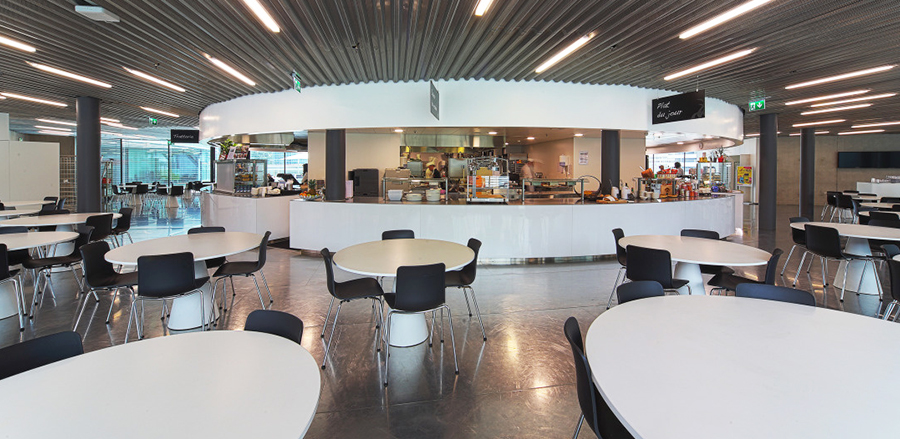
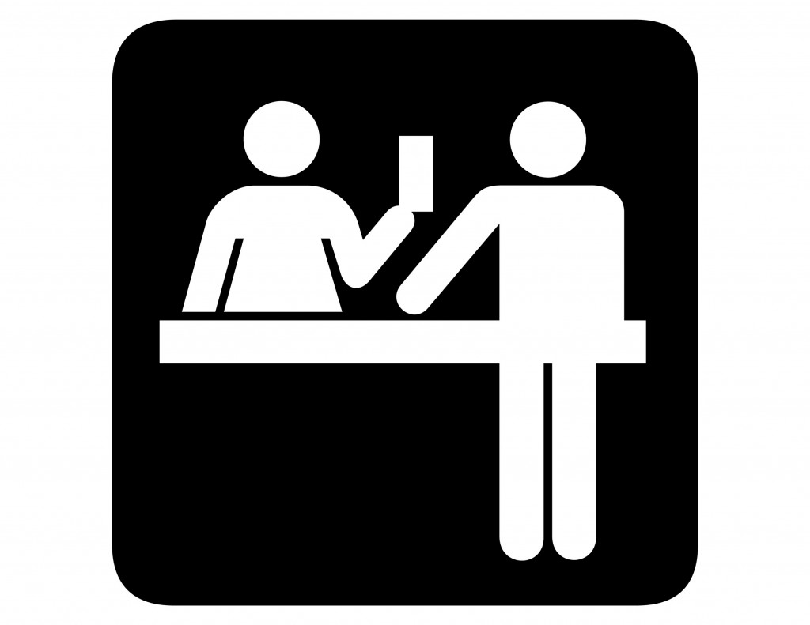

<!--
  Generated template for the InfoSlidesPage page.

  See http://ionicframework.com/docs/components/#navigation for more info on
  Ionic pages and navigation.
-->
<ion-header>

  <ion-navbar>
    <ion-title>info-slides</ion-title>
  </ion-navbar>
</ion-header>

<ion-content>

  <ion-slides pager>

    <ion-slide>
      
      <div class="slide-title" style="color:black">Welcome to our cafeteria app</div>
      <div class="slide-text"></div>
    </ion-slide>

    <ion-slide>
      
      <div class="slide-title">Purchase anything from the cafeteria by using this app</div>
      <div class="slide-text">Show the receipt to the cashier and receive your items</div>
    </ion-slide>

    <ion-slide>
      
      <div class="slide-title" style="color:black">Lets try it!</div>
      <button class="continueButton" ion-button block (click)="gotItButton()" > Got it, take me to home page</button>
    </ion-slide>

  </ion-slides>

</ion-content>